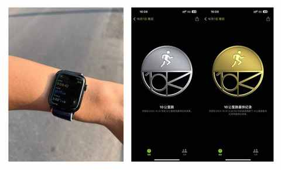
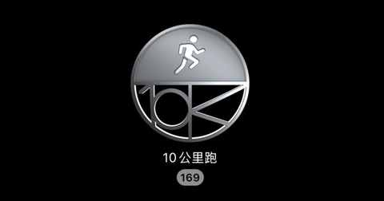
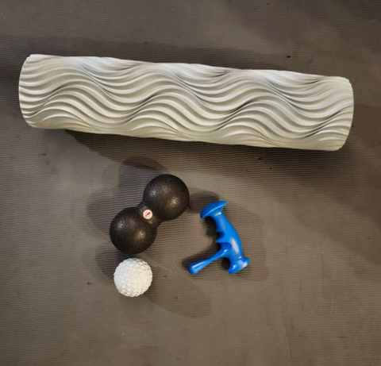
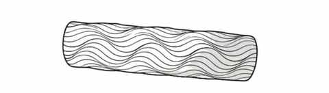
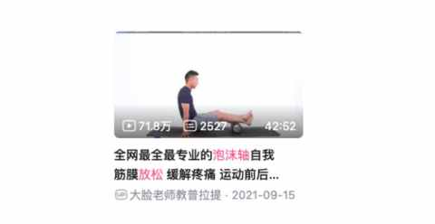
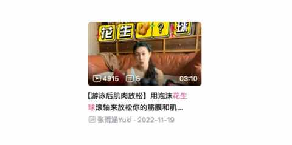
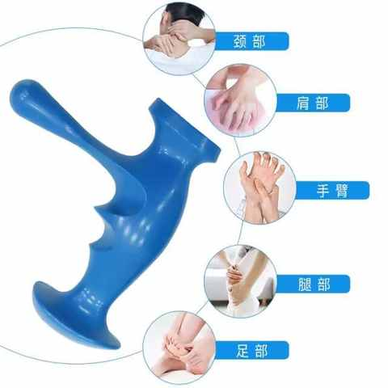

运动后总酸痛？这4个家常小物件，是放松肌肉的“隐形神器”
一、引子
距离我第一次跑 10km 已经有 2 年多的时间了，但直到现在我依然记得的并不是当天跑 10km 的状态。

因为这种跑的时候心率上升呼吸急促的情况每次跑快点配速的时候都会出现，只是现在的节奏能控的更好一点。

毕竟已经跑了 169 次 10km，今天也会文章写完后去完成第 170 次 10km。

令我记忆如此深刻的是：那天晚上睡觉的状态，比发高烧还难受，反复睡反复醒，浑身酸痛，任何姿势都不舒服。
早上一醒来，我就知道昨天强度大了，第一次跑 10km 不应该按那个配速来以至于浑身酸痛。
马上把买了许久没怎么用过的泡沫轴找到，随后打开 B 站搜索泡沫轴放松肌肉的视频教程，一点点来放松肌肉。

除了最上方的泡沫轴，下面的三个小物件也是后面陆续购入的，都能起到很好的放松肌肉的作用，泡沫轴反而是现在用的最少的了。
接下来依次来介绍下这几个能有效缓解肌肉酸痛的小物件及简单用法。
二、这 4 个小物件的功能及用法
1️⃣ 泡沫轴

可能是最常见的一个用于放松的小物件，基本上每个健身房都有。
简单介绍几个常识：
① 是圆柱形物体，各种长度的都有
如果需求不明确，可先买小尺寸的版本
② 有实心的、空心的、带浮点的、光面的等等
建议先选实心+光面的，前期用的时候痛感小一点，能坚持用
③ 更适合在固定场所使用
便携性不足，如果要出差之类的非必要不建议携带
我主要用泡沫轴来放松大腿和小腿及臀部，滚的时候确实很考验人对疼痛的耐受度，挺过前面几次就好了，使用的时候最好结合瑜伽垫一起。
最好结合教学视频进行，能更有逻辑的来把紧绷的肌肉放松到位。
也有看过很多视频，目前觉得大脸老师的这个视频的讲解最适合我来尝试。

大家在尝试用泡沫轴放松的过程中一定别过度了，力度别过大，时间别过长，以免过度放松肌肉。
2️⃣ 花生球
很多健身房也都能看到，但不是特别常见，在好用的同时也很便携。
如果过泡沫轴绝大多数时候都只能在瑜伽垫上躺着或趴着使用，花生球的使用场景就比泡沫轴多不少，既能和泡沫轴一样用，还能站着用和坐着用。
简单介绍几个常识：
① 有多个尺寸可供选择
根据自身需求去选择最好，如果需求尚不明确又想试试看
可以先选中号的，适配的情况能更多一点
② 多为实心但区分多种材质
不同材质的特效不一样，软硬程度也不同，在熟练之前可不选偏硬的产品
这个视频教程是居家环境， 更贴近大部分人的使用场景。

3️⃣ 筋膜球
筋膜球几乎是我现在用的最多的用来放松的工具小物件，因为太方便太好用了，特别是每次跑完长距离，我都会放松下肩膀和手臂及背部。
坐着的时候把筋膜球放在大腿或屁股下面也能缓解大腿和臀部的酸痛，能刺激到深层肌肉。
对于跑步或走路比较多的人来说，最不容忽视的部位是足底，用筋膜球能在坐着或站着的时候踩一踩，从而缓解比较紧张的足底筋膜。
简单介绍几个常识：
① 尺寸比较统一，是实心小球
大多数品牌的筋膜球尺寸是比较一致的，可能这样适配的部位更多一些
② 硬度偏高
因为实心的缘故，其硬度是比泡沫轴和花生球高不少的，使用的时候一定要注意力度，特别是用来按摩足底筋膜的时候
知名健身博主凯圣王的讲解是细致而微的，特别适合尝试用筋膜球放松前仔细看看，了解相关使用细节和技巧。
4️⃣ 手动扳机点按摩器
这个小物件是教练给我放松的时候用到的，当时觉得很有效果，我都疼出猪叫了，但是叫唤之后感觉对应的肌肉放松了不少，下课之后我还和教练借来用了几天，简直太好用了。
也是问了教练这个东西的名字才搜到，这是一个康复治疗上需要用到的工具，我主要用来放松大腿和小腿的深层肌肉，特别是跑了强度之后的当天或第二天。
简单介绍几个常识：
① 各家产品几乎都一样
都是蓝色的，都是一个造型
② 材质为硬塑料
是今天介绍的四个小物件里面最硬的
使用方法应该是这四个小物件里面最简单的了，其实就是找到酸疼的位置点，然后采取点按的方式，一定要注意力度不宜过大，有微微酸疼即可。

三、结语
运动后的肌肉放松是必不可少的环节，但一定要循序渐进地进行。
在使用这些小物件放松的时候，如果没有有经验的朋友或健身教练指导，请一定详细看完一些教程之后再进行实操，以免出现不必要的损伤。
近期文章
我的电车购买逻辑：用100kWh大电池的“确定性”，替代三电优化的“不确定性”
从前，有一个笨小孩，他的武器叫“笨功夫”
中年人提高跑量的意外之喜：最大摄氧量首次突破62！
告别选择困难症！翻遍留言区整理的宝藏跑步装备清单！
一双 “问题” 跑鞋带来的顿悟：问题的答案藏在细节里……
没想到送老婆去面试，居然是一次 “班味” 之旅
开了7年混动后投向纯电9个月，一个中年新能源车主的生活有了哪些新变化？
车型太多，普通人怎么选新能源车？分享一个更符合普通人的选车方法！
弯路没少走！8年新能源车主的真心话：这10件车载好物，日常用车真的离不开！